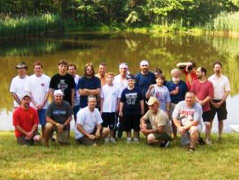

This years Nationals was held again in the historic Hudson Valley region of southern Duchess County, New York, from Sunday, July 20 through Friday, July 25. Camp Conron (a Boy Scout Camp site) was been rented for the occasion. The cost per. participant was $150 and included CO2, drinks, lunch at the lake each day. There was tents, tables, and chairs available for the combatants to escape into the shade between battles. A large workshop area was available and the combatants did not have to pack up and lug everything back to the hotel each day! Many ships spend the entire week on the tables at lake side.
Our submarines (grass eating carp) have done a terrific job of clearing the lake of prop jamming weeds, are getting quite large and the water looked good. Althugh Monday forcast some rain, it held off and two fleet battles were held. In the first battle, two Allied ships sank (both Rookies) and the score for the battle was 8775 Axis and 4870 Allied. That was a precurser for the week as the Allied fleet lost each and every battle through out the week. 8 Axis ships and 10 Allied ships competed in the first battle of Nationals.
The second battle resulted in no sinks and a score of axis 10245 and Allied 5290. 9 Axis ships and 10 Allied ships were on the pond. The Mighty Maryland (oldest model ship still fighting) had joined the Allied fleet as the damaged Pensacola sat out.
On Tuesday we had one and half fleet battles due to weather, finishing on Wed. morning. The battles kept going and the Axis won each one. The score at the end of the week was: Axis 64804, Allied 37584.
A grand time was had by all and we look forward to doing it all again next year. Nationals 08 Score Sheet
IRCWCC Nationals
2008
International R/C Warship Combat Club, Inc.
Keeping Ponds Safe since 1978

Captains of Nationals 2008